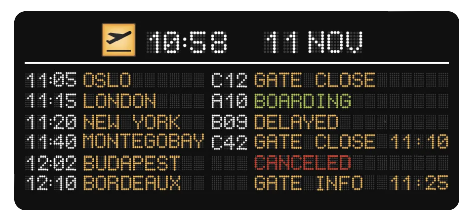
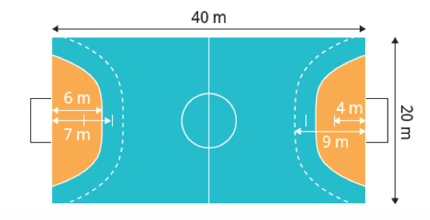

Traduire en notations : « Le point A est sur la droite passant par B et C ». ………………………………….. |
Georges doit prendre son vol pour se rendre à Montego Bay en Jamaïque.  Combien de temps lui reste-t-il avant le décollage ? Avant la fermeture de la porte ? |
Quelle est l’aire du terrain de handball ?  |